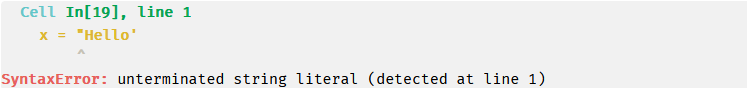
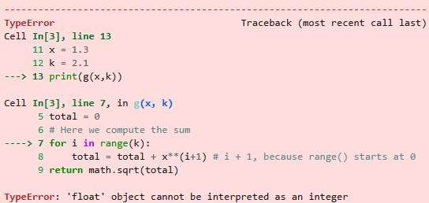
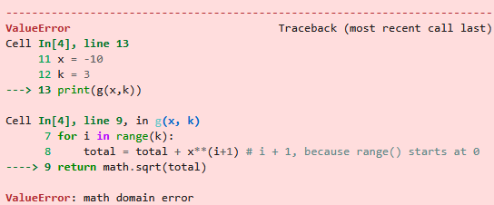
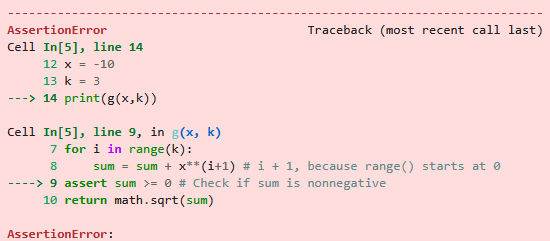
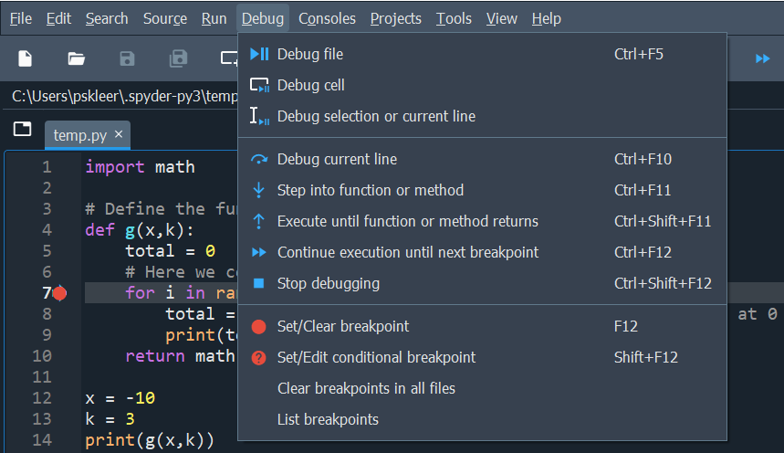
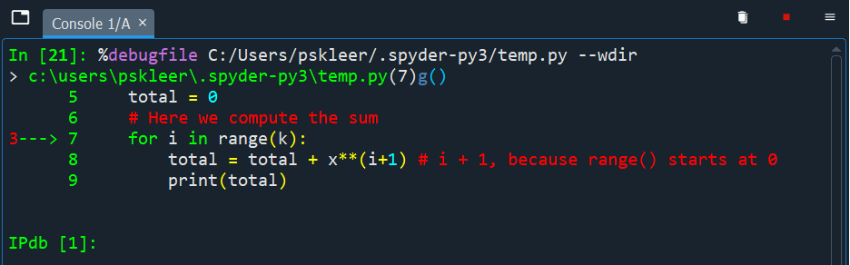
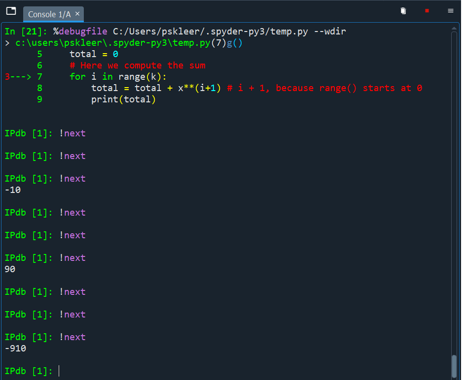

x = "Hello'11 Errors and debugging
While writing Python scripts, you probably have encountered the situation that Python returned an error message, indicating that there is something wrong with your code. When writing a script from scratch this will often happen. Roughly speaking, most of the time that you spend on creating a working Python script goes into correcting errors in the first draft of your code. This process is called debugging.
In this chapter we will discuss different types of errors that Python might return, as well as some general strategies that you might adopt in order to efficienctly debug your code.
11.1 Error types
The three main types of errors that can occurs in Python are syntax, runtime and logical errors. We will give some examples of each of these three errors in the coming subsections.
11.1.1 Syntax error
A syntax error occurs when Python does not understand the words or characters, i.e., syntax, that you use in your code. In more technical terms, Python is unable to interpret the code that you wrote because you did not use the correct syntax.

In the example above, we define a string x, but on the left we use a double quote and on the right a single quote. This is not correct, we should either use double quotes or single quotes on both sides. The output message indicates that the error occurs on the first line of the code, although the term “unterminated string literal” might not directly make sense to you.
Roughly speaking, Python tries say you started the creation of a string by using the double quotes at the beginning, and is therefore expecting the string to be concluded somewhere as well with double quotes, but this never happens. The code should have been as follows.
x = "Hello"Sometimes it is more obvious what is going wrong in your code. In the example above, Python raises an error saying that the colon : is missing, which is needed in order to define a function in Python.
# Define the function f(x) = x^2
def f(x)
return x**2The code should have been as follows.
# Define the function f(x) = x^2
def f(x):
return x**211.1.2 Runtime error
A runtime error occurs when Python runs (or executes) your code, but cannot create any output because the operations you try to perform on the variables that you defined are not possible. These errors are typically trickier than syntax errors: It might be that on some input data, your code does exactly what you want it to do, but on other input data it is not able to execute your code.
Consider the example below where we define a division function that takes as input two numbers a and b, and returns a/b.
def division(a,b):
return a/b
a = 1
b = 3
c = division(a,b)
print(c)0.3333333333333333This function works perfectly fine for the inputs a = 1 and b = 3. However, if we we would take b = 0, then Python raises a ZeroDivisionError, which indicates that we are trying to divide by 0, which is mathematically not possible.
def division(a,b):
return a/b
a = 1
b = 0
c = division(a,b)
print(c)Another common runtime error in the context of functions is a TypeError. Such an errors occur when, you do not provide the correct number of input arguments for a function. In the code below, we have forgotten to input the second variable b that the function division() requires.
def division(a,b):
return a/b
d = 1
e = 3
f = division(d)
print(c)In the context of indexing or accessing data in, e.g., a list, a common runtime error is the IndexError. Such an error occurs when you are, for example, trying to access an element of a string that does not exist. In the example below the list x has four elements. Since Python starts counting indices at 0, we have x[0] = 2, x[1] = 1, x[2] = 6 and x[3] = 8. Therefore, x[4] does not exist and so Python is not able to access it.
x = [2,1,6,8]
print(x[4])For scripts with classes, a common runtime error is an AttributeError which occurs if you are trying to access an attribute of an object that does not exist. In the below example, every student object has attributes name and age, but not ID. The code executes correctly up to the last line, but the last line itself gives an error.
class Student:
def __init__(self,name,age):
self.name = name
self.age = age
student1 = Student("Aidan",19)
print(student1.ID) # ID attribute does not exist11.1.3 Logical error
Arguably the most difficult to deal with are logical errors. These are errors that are not raised by Python, but are errors in the logic of the code. For example, a function that does not return the output it is supposed to return.
Consider the example below where the goal is to create a function that substracts a number b from another number a, i.e., the function is supposed to return a - b. The programmer made a mistake and instead, the function returns a + b. There is nothing wrong with the syntax of the function, nor does Python encounter issues while running the code. However, the function does not what the programmer wants it to do.
def substract(a,b):
#This function substracts the number b from a
return a + b
a = 1
b = 2
c = substract(a,b)
print(c) # Should be 1 - 2 = -13In the example above, it is fairly easy to conclude that the function is not behaving as it should, because almost all choices of a and b (excluding cases where a and/or b or zero) will return the wrong output.
Sometimes, however, logical errors are harder to spot as a function might still give the correct ouput for many input arguments.
As an example, suppose we want to create a function that can decided whether two intervals [a,b] and [c,d], with a,b,c,d \in \mathbb{R} and a \leq b, c \leq d are overlapping or not. If the first interval is [a,b] lies completelely left of the interval [c,d], i.e., if b < c, then the intervals do not overlap.
def overlap(a,b,c,d):
if b < c:
return print("No overlap!")
else:
return print("There is overlap.")
a = 1
b = 3
c = 0.5
d = 3.4
overlap(a,b,c,d)There is overlap.However, this function does not always give the correct output, because it does not account for the fact that the second interval [c,d] might lie completely left of the first interval [a,b], in which case there is also no overlap.
def overlap(a,b,c,d):
# This function check whether two intervals [a,b] and [c,d]
# have overlap or not.
if b < c:
return print("No overlap!")
else:
return print("There is overlap.")
a = 1
b = 3
c = -3
d = -2
overlap(a,b,c,d) # Gives wrong outputThere is overlap.To avoid logical errors, it is recommended to always test your code and functions on a diverse collection of input data.
11.2 Exceptions
Instead of having Python code crash due to an error, there is also the possibility to “catch” certain errors directly in a function. This allows a programmer to specify what should happen if a certain error occurs, without the whole code crashing. You can do this with a try-except construction.
Let’s look at an example. We consider the function g that computes the square root of the first k powers of a number x and sums them up, i.e.,
g(x,k) = \sqrt{\sum_{i=1}^k x^k} = \sqrt{x + x^2 + x^3 + \dots + x^k}.
Note that x can be any number, but k has to be an integer for the summation to be well-defined. For example, for x = 1.3 and k = 3, we have g(1.3,3) = 1.3 + 1.3^2 + 1.3^3 = 5.187.
import math
# Define the function g(x,k)
def g(x,k):
sum = 0
# Here we compute the sum
for i in range(k):
sum = sum + x**(i+1) # i + 1, because range() starts at 0
return math.sqrt(sum)
x = 1.3
k = 3
print(g(x,k))2.2774986278810356Multiple things can go wrong with trying to execute this function. For example, we might input a number k which is not an integer. This gives rise to a TypeError, because the range() function only works for integer inputs.
x = 1.3
k = 2.1
g(x,k)
Or we might input a number x for which the summation \sum_{i=1}^k x^k is negative, in which case we cannot take the square root (recall that the square root of a negative number does not exist).
x = -10
k = 3
g(x,k)
To inform a user that tries to execute this function what goes wrong, we can use a try-except construction. The rough outline of such a construction is as follows.
try:
# Some code that Python should execute
except SomeError:
# If an error of the type SomeError occurs
# then do ...
except AnotherError:
# If an error of the type AnotherError
# occurs, then do ...A simple example, when trying to divide by zero, is given below.
try:
5/0
except ZeroDivisionError:
print("You cannot divided by zero.")You cannot divided by zero.Python will first try to execute the code under the try statement. If this gives rise to an error (i.e., exception), then it will do as is specified under the except statement of the error that was raised.
You can use the try-except construction also within a function. Let us do this for the function g above.
import math
# Define the function g(x,k)
def g(x,k):
try:
sum = 0
# Here we compute the sum
for i in range(k):
sum = sum + x**(i+1) # i + 1, because range() starts at 0
return math.sqrt(sum)
except TypeError:
return print("Parameter k should be an integer.")
except ValueError:
return print("Cannot take square root of negative power sum.")x = 1.3
k = 2.1
g(x,k) # Gives TypeError because k not integer.Parameter k should be an integer.x = -10
k = 3
g(x,k) #Gives ValueError because power sum is negative.Cannot take square root of negative power sum.11.3 Debugging
The process of identifying and fixing errors (also known as bugs), is called debugging. One of the reasons errors are called bugs goes back to a computer that was built at Harvard University in 1947. At some point a moth got into the computer, which were giant at the time (the computers not the moths), and caused a piece of hardware to malfunction.
In general, there is no fixed recipe for how to debug a function that is not working properly, but there are many ways to get more insights in what a function is doing step-by-step, giving you the option to identify where something is going wrong. These are especially useful when you are trying to fix logical errors.
Below we will give some examples of what you can do to get better insights in what is going wrong in your function. This is by no means meant to be an exhaustive list.
11.3.1 Use print() statements
One way to get some insight into what your function is doing, is to create print statements in the code. Let us have another look at the example given above.
import math
# Define the function g(x,k)
def g(x,k):
sum = 0
# Here we compute the sum
for i in range(k):
sum = sum + x**(i+1) # i + 1, because range() starts at 0
return math.sqrt(sum)
x = 1.3
k = 3
print(g(x,k))2.2774986278810356Python tells us that there is a math domain error, but it does not give any explicit information about what went wrong. Given that we use the sum variable as input for the square root function, it is a good idea to keep track of how the sum argument changes throughout the execution of the function, especially what its value is when we try to input it into the square root function. We use a try-except construction to not have Python print the whole error code.
import math
# Define the function g(x,k)
def g(x,k):
try:
sum = 0
# Here we compute the sum
for i in range(k):
print("Sum at start iteration",i,":",sum) # Print here to see how sum changes
sum = sum + x**(i+1) # i + 1, because range() starts at 0
print("Sum after for-loop:", sum) # Print sum at end of for-loop
return math.sqrt(sum)
except ValueError:
return print("Something goes wrong")
x = -10
k = 3
print(g(x,k))Sum at start iteration 0 : 0
Sum at start iteration 1 : -10
Sum at start iteration 2 : 90
Sum after for-loop: -910
Something goes wrong
NoneFrom the execution it can be seen that the sum variable is negative right before we try to use math.sqrt(sum). This is what causes the error: the value of sum is outside of the domain of the square root function (the domain is all nonnegative numbers for which the square root is well-defined).
The None printed at the end is the result of the final print statement print(g(x,k)) which cannot be properly executed because g(x,k) has not been computed.
11.3.2 Use assert
If we already would have had some suspicion that the sum variable being negative is what is causing the error in the function g, we could have also checked this quickly by adding the command assert sum >= 0 after the for-loop, instead of adding the print() statements and the try-except construction. If the assertion is not true, then Python raises an AssertionError.
import math
# Define the function g(x,k)
def g(x,k):
sum = 0
# Here we compute the sum
for i in range(k):
sum = sum + x**(i+1) # i + 1, because range() starts at 0
assert sum >= 0 # Check if sum is nonnegative
return math.sqrt(sum)
x = -10
k = 3
print(g(x,k))
We can also check the assertion with a try-except construction to avoid the error being printed.
import math
# Define the function g(x,k)
def g(x,k):
try:
sum = 0
# Here we compute the sum
for i in range(k):
sum = sum + x**(i+1) # i + 1, because range() starts at 0
assert sum >= 0 # Check if sum is nonnegative
return math.sqrt(sum)
except AssertionError:
return print("The sum is negative; cannot compute square root.")
x = -10
k = 3
print(g(x,k))The sum is negative; cannot compute square root.
None11.3.3 Use Spyder debugger
Spyder also has the option to debug your code. What this means is that Spyder allows you to execute the code line-by-line, therefore making it easier for you to figure out at which specific line your function is running into trouble. We will next explain the very basics of debugging in Spyder.
The first thing you should do is set a breakpoint somewhere. What will happen is that Python will run your code until the moment it tries to execute the code on the breakpoint line. The breakpoint you set by click just right of the line number on which you want to place the breakpoint. It will then appear as a red circle next to the line number.
After you have placed the breakpoint, you should go to Debug in the toolbar of Spyder, and select Debug (Ctrl+F5).

Then in the console you will see the following appearing, which indicated that you have gone into debug mode. It shows that the current execution halted at line 7, which is the line where we added the breakpoint. This is the start of the for-loop.

By pressing Ctrl+F10 (the Step option in the Debug tab), you can move one line, i.e., step, down in the execution of the code. The current line that Python is at, is denoted by the blue arrow pointing rightwards. Doing Ctrl+F10 a couple of times, we reach line 9 at which point Python will print -10. This finishes the execution of the for-loop for i = 0. If you again press Ctrl+F10, you will see that the arrow jumps back to line 7. This indicates that we again start the for-loop, but now with i = 1.
Lines that contain a print statement will have their content appear in the console. Below you can see the output -10, arising from print(sum) on line 10 in the round of the for-loop with i = 0, 90 from the round of the for-loop with i=1, and -910 from i = 2. Recall that k = 3 in this example, so the for-loop stops after i = 2 = k-1.

In general, Python will go one-by-one through all the rounds of the for-loop, for the values i = 0,\dots,k-1. Afterwards, Python will continue with the return statement on line 10. This line-by-line execution makes it possible to identify the exact moment where your code is doing something wrong.
While doing line-by-line exectution in debugging mode, you can also keep track of how variables in your code change in the variable explorer. This often also gives insights into what your code is doing.